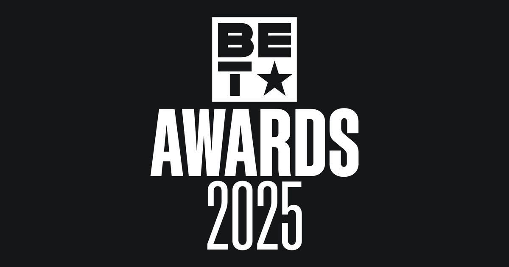
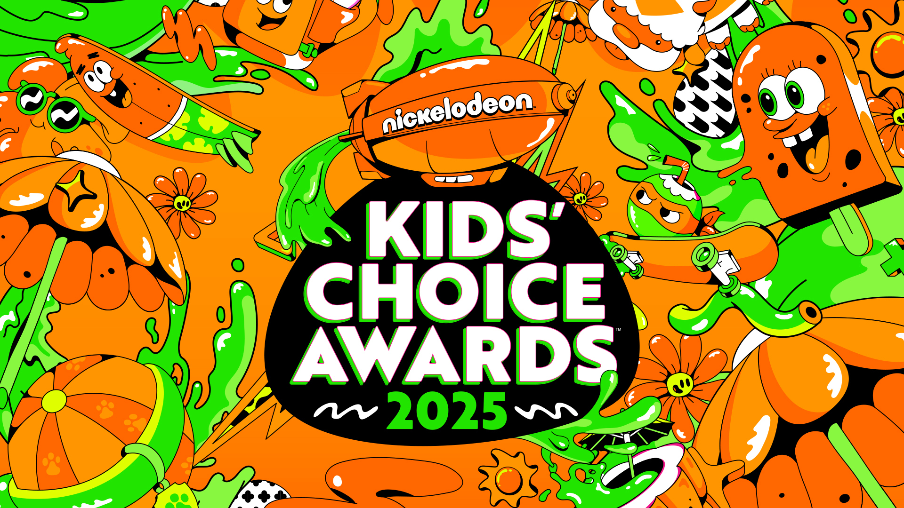
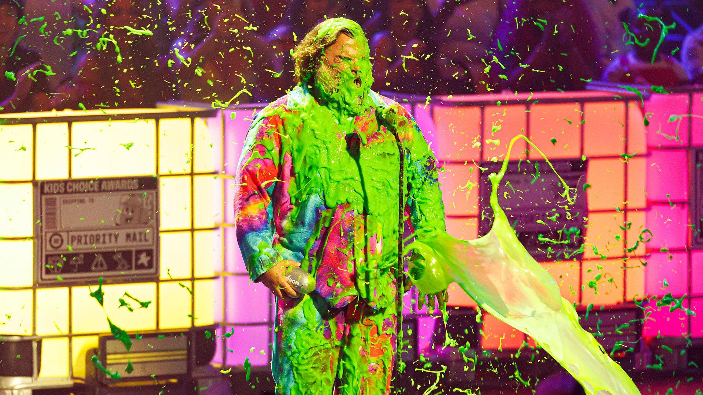

Live Events
During my time at Paramount, I have been involved in multiple live broadcast environments, gaining valuable hands-on experience in high-pressure production settings. These opportunities have deepened my understanding of both the technical and collaborative aspects of live television production.
BET Awards (6/9/25)
The BET Awards is an annual celebration recognizing Black excellence across entertainment, including music, sports, and culture. The 2025 ceremony took place on June 9 and was hosted by actor and comedy icon Kevin Hart. Notable winners included Kendrick Lamar, SZA, and Leon Thomas for their achievements in music, while athletes such as WNBA star Angel Reese and Super Bowl-winning quarterback Jalen Hurts were honored for their impact in sports. The event featured a live pre-show beginning at 6:30 PM EST, followed by the main broadcast from 8:00 PM to approximately 11:30 PM EST.
As a Paramount intern, I had the opportunity to contribute to the live production environment of this high-profile event. I gained firsthand experience supporting a nationally televised broadcast, enhancing my skills in real-time monitoring, live event coordination, and technical operations.

For the BET Awards broadcast, three separate control rooms were utilized: one for the domestic feed, another for international distribution, and a third dedicated to a broadcast for Brazil. I had the opportunity to observe operations across all three, gaining insight into how regional broadcast requirements—such as language, regulations, and timing—impact production workflows. This experience helped me understand the intricacies of broadcast delays and how teams adapt content in real time to meet the needs of different audiences. I also learned how the live show is structured into segments, with teams continuously monitoring timing to determine whether promotional content should be inserted or removed in order to maintain the overall runtime and keep the show on schedule.
Overall, being part of the BET Awards broadcast environment was an incredible experience that made me feel like I was contributing to something truly special. It gave me a sense of purpose—something I consistently seek in any role. The experience also deepened my understanding of television broadcasting and how the fundamentals of large-scale events like this come together.
Kids' Choice Awards (6/21/25)
The Kids' Choice Awards, an iconic annual awards ceremony presented by Nickelodeon, has been a staple of family-friendly entertainment for nearly four decades. Celebrating achievements across television, film, music, and sports, the KCAs are unique in that the winners are chosen entirely by kids through a nationwide voting process—placing the audience at the heart of the show. Known for its vibrant, high-energy atmosphere, the event features colorful sets, playful performances, and interactive segments designed to engage viewers of all ages. A signature tradition of the KCAs is the "sliming" of award recipients—a fun and messy surprise that has become a beloved hallmark of the show. The 2025 ceremony began at 8:00 p.m. EST and concluded at approximately 9:30 p.m., delivering 90 minutes of excitement, laughter, and unforgettable moments.
Similar to my experience with the BET Awards, I had the privilege of contributing to the live broadcast production of this event. I worked behind the scenes in the control room, conducting live checks for audio and video before the show began and coordinating with teams on-site in Los Angeles. Since this was the second major show I had been involved in, I approached it with a stronger foundation and greater confidence. Nevertheless, it remained a valuable learning opportunity, allowing me to further develop my understanding of live event workflows and broadcast operations.
Through this experience, I gained valuable insight into various post-production processes, including how a live show is edited for re-airing. Being part of this environment also enhanced my understanding of high-level problem-solving within the broadcast industry—an essential skill in fast-paced, high-pressure scenarios. One of the most impactful takeaways was learning how to remain composed and make quick, informed decisions during live events.
For fun, my co-intern and I made predictions for the winners in each category—and honestly, we were pretty close to getting them all right!
Overall, being part of the live broadcast setting of the Kids’ Choice Awards was an incredibly meaningful experience. Beyond the professional growth and hands-on learning it offered, the opportunity held personal significance for me. Having grown up watching iconic Nickelodeon shows like SpongeBob SquarePants, iCarly, and Drake & Josh, it was a full-circle moment to be in the room for the broadcast and witness the behind-the-scenes efforts that bring such a major event to life. It’s an experience I will always cherish as I move forward in my career.
VMA's (9/7/25)
The MTV Video Music Awards (VMAs) are an annual event that recognizes the year’s most outstanding music videos. Since their debut in 1984, it has become a defining fixture in pop culture, renowned for showcasing groundbreaking performances and unforgettable moments from some of the world’s most influential artists. The 2025 VMAs are scheduled to take place at 8:00 PM EST on September 7 at UBS Arena. Being part of the broadcast environment will offer a new level of hands-on experience and provide valuable opportunities to further develop my skills in the industry.